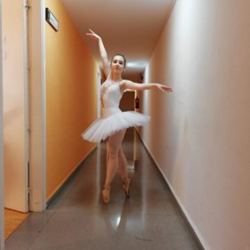
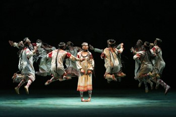

Ballet
El ballet es una de mis mayores pasiones; llevo bailando tantos años que ya es parte de mí, y me costaría dejarlo si tuviera que hacerlo. Aunque cada vez me es más complicado sacar tiempo, año a año voy encontrando huecos en mi horario para no tener que abandonar la danza.
En esta sección he querido dedicar algo de espacio para hablar sobre el ballet, mi relación con él y ciertos aspectos que considero interesantes.
Yo y el ballet
Empecé en mi primera clase de muy pequeña, con cinco años, y así, llevo casi veinte bailando, habiendo tenido la suerte de descubrir por el camino que el ballet me gusta de verdad.
Lo cierto es que no ha hecho más que aportarme beneficios, tanto físicos como mentales: desde una mejor forma física hasta una mayor disciplina.
Actualmente estoy preparándome para el examen final del último año del programa de la Royal Academy of Dance, uno de los programas más importantes del mundo de la danza.
Mis ballets favoritos
Bien sea por la música, por la coreografía, la historia o toda su escenografía y vestuario, hay una serie de ballets que ocupan un lugar especial para mí.
La consagración de la primavera
Descubrí este ballet casi de casualidad, y me resultó tan curioso en cuanto a música y coreografía que terminé obsesionada con él.
El Cascanueces
Este ballet con música del compositor Chaikovski es todo un clásico navideño, y dado que tanto el ballet como el cuento original han tenido adaptaciones a distintos medios, es difícil no haber oído hablar de él.
Este fue uno de los primeros ballets con los que me familiaricé, y rápidamente se convirtió en mi favorito, especialmente por su música y por lo vistoso que es.
Bailarines favoritos
- Natalia Osipova: Natalia es probablemente mi bailarina favorita, tanto por su gran expresividad como por su técnica, de la que destacaría sus saltos. ¡Me encantaría tener la oportunidad de verla en directo algún día!
- Marianela Núñez: de ella también destaco su técnica impecable y su expresividad, y en cuanto a danza, es para mí un ejemplo a seguir